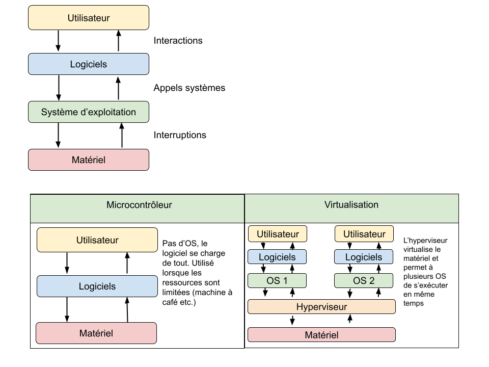
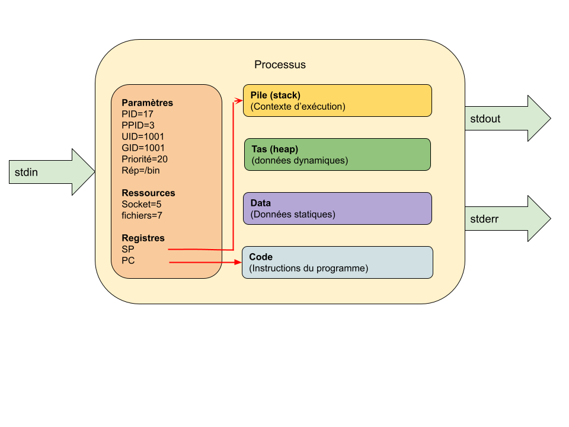
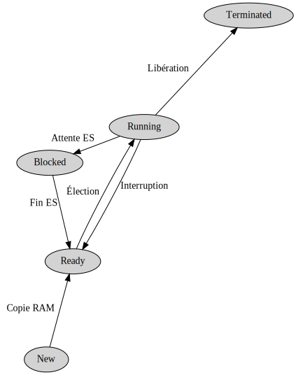

Système d’exploitation
L’OS est chargé d’assurer la liaison entre les ressources matérielles, l’utilisateur et les logiciels.
Plusieurs situations existent :

Rôles
Les rôles principaux d’un OS sont :
- La gestion du processeur,
- La gestion de la mémoire vive,
- La gestion des entrées / sorties,
- La gestion des processus (programme en cours d’exécution),
- La gestion des droits,
- La gestion des fichiers et du système de fichier.
Composants d’un OS
-
Le noyau (kernel) contient les fonctions principales d’un OS (mémoire, processus, fichiers, IO, communication etc.)
-
Le shell (shell pour coquille…) permet la communication des via un intermédiaire.
- CLI (Command Line Interface : la console !) : interpréteur de commandes
en ligne. Exécute les commandes une par une (
[quentin@pc] $ ls) ou depuis un script. Le shell le plus couramment utilisé est BASH. - GUI (Graphical User Interface : les fenêtres) : interface graphique proposant un pointeur, des fenêtres, des icônes, des boutons pour rendre la manipulation conviviale et aisée.
- CLI (Command Line Interface : la console !) : interpréteur de commandes
en ligne. Exécute les commandes une par une (
Statistiques d’utilisation
Bureau et portable
| OS | Part |
|---|---|
| Windows | 78% |
| OS X | 17% |
| Unix like | 3% |
| Autres | 2% |
Mobile
| OS | Part |
|---|---|
| Android (Linux) | 72% |
| iOS | 27 % |
| Autres | 1% |
Serveur internet
| OS | Part |
|---|---|
| UNIX | 75% |
| Windows | 25% |
Mainframes : utilisés pour l’organisation des ressources et les transactions financières.
| OS | Part |
|---|---|
| z/OS (IBM UNIX) | 100% |
L’utitilisation des mainframes est sur le déclin depuis 2010 mais ils jouent un rôle majeur dans les transactions commerciales.
SuperComputer : ordinateur conçu pour atteindre les plus hautes performances possibles. Utilisés pour la météo, la modélisation d’objets chimiques, les simulations physiques (simulations aérodynamiques, calculs de résistance des matériaux, simulation d’explosion d’arme nucléaire, étude de la fusion nucléaire, etc.), la cryptanalyse ou les simulations en finance et en assurance.
| OS | Part |
|---|---|
| Linux | 99% |
| UNIX (autres) | <1% |
Cette évolution est récente, en 1996, UNIX équippait 100% des super calculateurs
IOT (Internet Of Things) : les objets embarqués.
Les sources divergent mais c’est le marché le plus fragmenté. On trouve les acteurs habituels : android, linux, windows etc.
Serveurs dans le cloud
Les grandes entreprises utilisent leurs propres datacenters ou des ordinateurs hébergés chez de grandes entreprises. Les leaders sont Amazon Web Service, Microsoft Azure, Google Cloud Platform, Alibaba Cloud et IBM Cloud.
On peut déployer un ordinateur windows dans le cloud mais la très grande majorité des machines utilisent un linux virtualisé dans Docker et orchestré par Kubernetes.
Autres
Google utilise un OS pour datacenter appelé BORG. C’est un projet assez secret mais qui a contribué à la création de Kubernetes.
Processus
Programme
Du texte exécutable par la machine
Processus
Un programme en cours d’exécution
Lancement
L’exécution d’un programme consiste à copier son code en mémoire et à faire pointer le CPU sur la première instruction.
Celles-ci sont ensuite exécutées une par une jusqu’à épuisement ou jusqu’à l’arrêt du programme par le système d’exploitation.
L’utilisateur peut lancer un programme depuis le GUI en double cliquant dessus ou depuis le CLI en l’appelant avec
$ ./nom_du_programme
$ ./nom_du_programme &
En ajoutant une esperluette (ampersand &) on exécute le programme en tâche de fond et on récupère la main sur le terminal.
Format d’exécutable
Chaque système d’exploitation dispose de son propre format pour rendre un fichier exécutable.
| Windows | UNIX | OS X |
|---|---|---|
| PE | ELF | Mach-O |
ELF (Executable and Linkable Format, est un format de fichier binaire utilisé pour l’enregistrement de code compilé.
Chaque fichier ELF est constitué d’un en-tête fixe, puis de segments et de sections. Les segments contiennent les informations nécessaires à l’exécution du programme contenu dans le fichier.
Ainsi le système d’exploitation sait où trouver les informations dont il aura besoin lors de l’exécution.
Mach-O et PE utilisent des principes similaires.
Composants d’un processus
Un processus est constitué :
- d’un ensemble d'instructions à exécuter (section CODE),
- d’un espace d’adressage en mémoire vive (sections pile, tas et data)
- de ressources (fichiers ouverts, sockets réseau, connexion bdd etc.)
- des flux d’entrée (stdin) et de sortie (stdout, stderr) utilisés pour communiquer avec l’extérieur.

Les détails d’un processus sont accessibles dans le dossier /proc où
chaque chaque processus se voit attribuer un dossier selon son PID
durant son exécution.
par exemple :
$ sudo ln -l /proc/17
cmdline (line de commande utilisée pour lancer le processus)
environ (variables d'environnement)
maps (zone de mémoire du processus)
fd (fichiers ouverts et connexions)
net (statistiques réseau)
status (état et statistiques du processus)
syscall (appels systèmes utilisés par le programme)
Pour afficher le contenu de ces fichiers on peut, par exemple :
$ sudo cat /proc/17/status
Arborescence des processus
Au lancement de l’OS, un premier processus est crée, il sera
l’ancetre de tous les autres. Il se nomme init et son PID est 1.
Ensuite l’OS va créer des processus fils à partir du père init de
deux types :
- démon (service sous windows) : processus qui tournent en continu,
- utilisateurs : lancés à partir du shell.
On peut consulter cette arborescence avec la commande pstree.
Processus crées depuis Python
Python, comme tous les langages modernes, permet de manipuler les processus : d’en créer, de les tuer, de les synchroniser de récupérer leur sortie.
Lancement d’un processus simple
import os
os.system("/usr/bin/mousepad")
# le programme python est _bloqué_ jusqu'à la terminaison du processus...
La bibliothèque os contient des fonctions permettant de réaliser
des appels systeme.
Lancement d’un processus et manipulation des entrées sorties :
import subprocess
sortie = subprocess.run(["ln", "-l"], capture_output=True)
print(sortie)
Ce programme va créer un processus, l’exécuter, enregistrer sa sortie puis l’afficher.
Faire tourner une fonction dans un processus à part
from multiprocessing import Process
# cette fonction sera _embarquée_ dans un processus fils
def saluer(nb_fois: int):
"""Affiche `nb_fois` la ligne 'bonjour' """
for _ in range(nb_fois):
print("bonjour")
# création d'un processus embarquant la fonction saluer
p1 = Process(target=saluer, args=(5,))
# lancement du processus
p1.start()
# attente de la fin du processus (=synchronsation)
p1.join()
Cycle de vie d’un processus
Lors de l’exécution d’un programme, un processus change réculièrement d’état. C’est l’ordonnanceur qui est responsable de ces changements d’état.

- new : le processus vient d’être crée,
- ready : complètement copié en RAM, il attend que l’ordonnanceur lui donne la main sur le processeur,
- running : le processus est en cours d’exécution sur le processeur,
- blocked : le processus est bloqué par la lecture d’une entrée (clavier, lecture fichier)
- terminated : le processus s’est terminé normalement ou le système l’a arrêté et ses ressources ont été libérées,
Il existe d’autres états :
- sleeping : lors de l’exécution d’une fonction d’attente (
time.sleep(1)) - swapped : le processus est transféré de la RAM sur le swap (partition du disque dur servant à compléter la RAM)
- zombie : le père de ce processus s’est terminé avant lui. Le système utilise cet état pour récupérer les ressources.
Consulter les processus en cours d’exécution
On peut souhaiter consulter une liste statique plus ou moins riche d’informations ou un tableau dynamique.
| Windows | UNIX | |
|---|---|---|
| Liste statique | tasklist |
ps |
| Liste dynamique | Gestionnaire de tâches | top |
-
topva afficher la liste des processus en cours, on peut les trier selon des critères et les interrompretop - 13:24:53 up 4 days, 18:42, 1 user, load average: 0,23, 0,57, 0,53 Tasks: 316 total, 1 running, 315 sleeping, 0 stopped, 0 zombie %Cpu(s): 3,7 us, 1,7 sy, 0,0 ni, 94,1 id, 0,1 wa, 0,4 hi, 0,1 si, 0,0 st MiB Mem : 15941,6 total, 3286,3 free, 9520,8 used, 3134,5 buff/cache MiB Swap: 0,0 total, 0,0 free, 0,0 used. 5433,7 avail Mem PID USER PR NI VIRT RES SHR S %CPU %MEM TIME+ COMMAND 727329 quentin 20 0 515024 57008 38592 S 3,0 0,3 14:22.76 alacritty 5698 quentin 20 0 517296 42560 12592 S 2,3 0,3 99:56.19 alacritty 12627 quentin 20 0 2307648 22096 1120 S 2,0 0,1 133:21.57 winedevice.exe 1722 quentin 20 0 1520044 513336 147164 S 1,7 3,1 105:00.75 chrome 728335 quentin 20 0 210100 98620 7992 S 1,7 0,6 8:33.93 nvim 917 root 20 0 6729416 192076 65736 S 1,3 1,2 147:52.23 Xorg 1505 quentin 20 0 585356 6544 2088 S 1,3 0,0 98:54.53 conky 1760 quentin 20 0 398148 89088 28652 S 1,3 0,5 46:07.75 chromehtopest une version plus moderne et souvent utilisée :1[||| 3.9%] Tasks: 187, 1094 thr; 1 running 2[|||| 4.6%] Load average: 0.23 0.50 0.51 3[|| 2.6%] Uptime: 4 days, 18:43:20 4[|||| 5.9%] Mem[||||||||||||||||||||||||||||||||||||||||9.94G/15.6G] Swp[ 0K/0K] PID USER PRI NI VIRT RES SHR S CPU% MEM% TIME+ Command 727329 quentin 20 0 502M 57008 38592 S 2.6 0.3 14:27.48 alacritty -e ranger 785093 quentin 20 0 10588 6604 3536 R 2.0 0.0 0:00.30 htop 1505 quentin 20 0 571M 6544 2088 S 1.3 0.0 1h38:55 conky 1536 quentin 20 0 571M 6544 2088 S 1.3 0.0 1h14:43 conky ... F1Help F2Setup F3SearchF4FilterF5Tree F6SortByF7Nice F8Nice F9Kill F10Quit -
psva afficher différentes informations selon les paramètres donnés.On utilise couramment
ps auxetps -ef$ ps aux USER PID %CPU %MEM VSZ RSS TTY STAT START TIME COMMAND root 1 0.0 0.0 171940 7988 ? Ss juin21 0:39 /sbin/init root 2 0.0 0.0 0 0 ? S juin21 0:00 [kthreadd] root 3 0.0 0.0 0 0 ? I< juin21 0:00 [rcu_gp] root 4 0.0 0.0 0 0 ? I< juin21 0:00 [rcu_par_gp] root 6 0.0 0.0 0 0 ? I< juin21 0:00 [kworker/0:0H-kblockd] root 8 0.0 0.0 0 0 ? I< juin21 0:00 [mm_percpu_wq] root 9 0.0 0.0 0 0 ? S juin21 0:53 [ksoftirqd/0] root 10 0.0 0.0 0 0 ? S juin21 0:00 [rcuc/0] root 11 0.0 0.0 0 0 ? I juin21 2:27 [rcu_preempt] root 12 0.0 0.0 0 0 ? S juin21 0:00 [rcub/0] ...$ ps -ef UID PID PPID C STIME TTY TIME CMD root 1 0 0 juin21 ? 00:00:39 /sbin/init root 2 0 0 juin21 ? 00:00:00 [kthreadd] root 3 2 0 juin21 ? 00:00:00 [rcu_gp] root 4 2 0 juin21 ? 00:00:00 [rcu_par_gp] root 6 2 0 juin21 ? 00:00:00 [kworker/0:0H-kblockd] root 8 2 0 juin21 ? 00:00:00 [mm_percpu_wq] root 9 2 0 juin21 ? 00:00:53 [ksoftirqd/0] ...Ces listes étant souvent conséquentes (318 processus en cours d’exécution sur ma machine…) on filtre souvent avec
grep:$ ps -ef | grep python root 1097 1 0 juin21 ? 00:03:15 /usr/bin/python3 /home/qmonit_client.py quentin 1367 1 0 juin21 ? 00:00:01 /usr/bin/python /usr/bin/blueman-applet quentin 1602 1 0 juin21 ? 00:00:01 /usr/bin/python /usr/bin/blueman-tray quentin 6214 5699 0 juin21 pts/6 00:09:11 /usr/bin/python3 ./iot.py quentin 727330 727329 0 08:07 pts/1 00:00:01 /usr/bin/python -O /usr/bin/ranger
Envoyer un signal au processus
Avec ps -ef | grep mon_binaire on peut accéder au PID d’un processus,
ensuite on peut lui envoyer un signal.
Par exemple, dans la dernière liste ci-dessus, si je veux tuer iot.py,
son PID est 6214, je peux exécuter :
kill 6214
qui va lui envoyer un signal TERM lui demandant de s’interrompre de lui même.
Si le processus est planté et ne répond pas à ce signal, on peut forcer son interruption avec :
kill -9 6214
C’est à réserver aux situations critiques, le processus n’ayant pas la possibilité d’enregister quoi que ce soit de son exécution…
Il existe d’autres signaux, kill, comme -1 (HUP) qui relance le programme
en question.
On peut aussi tuer les processus par leur nom avec killall nom. C’est pratique
lorsqu’on est certain qu’un programme n’est lancé qu’une seule fois.
On peut, enfin, récupérer les PID des programmes avec pidof
$ pidof alacritty
727329 5698 5366
Et enchaîner :
$ kill -9 $(pidof alacritty)
Va tuer toutes les instances d’alacritty…